This note describes how to derive Bayesian estimates of the conic intrinsic volumes, given sample data either from the intrinsic volumes distribution or from the bivariate chi-bar-squared distribution. The simplest case of direct samples from the intrinsic volumes distribution, and without enforcing any properties for the intrinsic volumes, can be solved analytically; enforcing the log-concavity inequalities already prohibits an analytical solution. The case of reconstructing the intrinsic volumes based on bivariate chi-bar-squared data is even more challenging. In these more complicated cases the posterior distribution will be sampled through Monte-Carlo sampling. The functions in conivol mostly use the sampler Stan (wikipedia), although JAGS (wikipedia) is also partially supported. See below for more details.
We assume familiarity with the
Other vignettes:
As in the previous vignette, we use the following notation:
Example computations:
We study in this vignette the intrinsic volumes of the following randomly defined polyhedral cone, \(C=\{Ax\mid x\geq0\}\) with \(A\in\text{R}^d\) given by:
d <- 17
num_gen <- 50
set.seed(1324)
A <- matrix( c(rep(1,num_gen), rnorm((d-1)*num_gen)), d, num_gen, byrow = TRUE )
out <- polyh_reduce_gen(A)
str(out)
#> List of 5
#> $ dimC : int 17
#> $ linC : int 0
#> $ QL : logi NA
#> $ QC : num [1:17, 1:17] 1 0 0 0 0 0 0 0 0 0 ...
#> $ A_reduced: num [1:17, 1:50] 1 -1.451 -1.105 -0.221 0.758 ...
dimC <- out$dimC
linC <- out$linC
A_red <- out$A_reducedIn other words, the generators of the cone are iid Gaussian vectors chosen in an affine hyperplane of height one. We choose two batches of samples both from the intrinsic volumes distribution and from the bivariate chi-bar-squared distribution to illustrate the different approaches for deriving posterior distributions.
samp_iv_sm <- polyh_rivols_gen(1e2, A_red, reduce=FALSE)$multsamp
samp_iv_la <- polyh_rivols_gen(2e3, A_red, reduce=FALSE)$multsamp
samp_bcb_sm <- polyh_rbichibarsq_gen(1e2, A_red, reduce=FALSE)
samp_bcb_la <- polyh_rbichibarsq_gen(2e3, A_red, reduce=FALSE)The prior distributions can take initial guesses for the intrinsic volumes into account. To illustrate this we will only use the initial estimate that is based on the statistical dimension and the normal approximation:
v0_iv_sm <- init_ivols( dimC, sum(0:dimC * samp_iv_sm/sum(samp_iv_sm)), init_mode=1 )
v0_iv_la <- init_ivols( dimC, sum(0:dimC * samp_iv_la/sum(samp_iv_la)), init_mode=1 )
v0_bcb_sm <- init_ivols( dimC, estim_statdim_var(dimC,samp_bcb_sm)$delta, init_mode=1)
v0_bcb_la <- init_ivols( dimC, estim_statdim_var(dimC,samp_bcb_la)$delta, init_mode=1)The different initial starting points (their closeness is explained by the fact that the starting point depends on a single parameter (the statistical dimension), which is easily estimated): 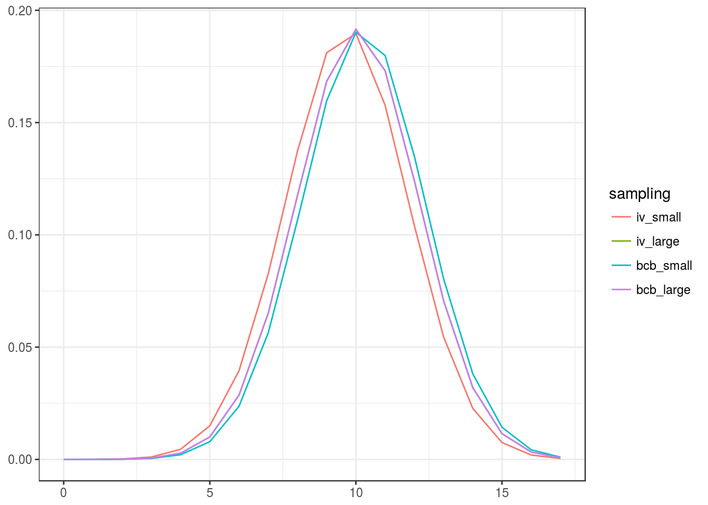
In a Bayesian approach we do not consider the intrinsic volumes as fixed parameters but rather as random themselves. Hence, we introduce the random variable \(V=(V_0,\ldots,V_d)\) that takes values in the probability simplex \[ \Delta^d = \big\{x\in\text{R}^{d+1}\mid 0\leq x_k\leq 1 \text{ for all }k,\; x_0+\dots+x_d=1\big\} . \]
For taking the parity equations \[ V_0+V_2+V_4+\dots=V_1+V_3+V_5+\dots=\tfrac{1}{2} \] into account, we further introduce the two random variables \(V^e=2(V_0,V_2,V_4,\ldots)^T\) and \(V^o=2(V_1,V_3,V_5,\ldots)^T\). A random model for the intrinsic volumes that respects the parity equation thus can be modeled through \(V^e\) and \(V^o\) taking values in the corresponding probability simplices: \(V^e\in \Delta^{d^e}\) and \(V^o\in \Delta^{d^o}\) with \(d^e=\lfloor \frac{d}{2}\rfloor\) and \(d^o=\lceil \frac{d}{2}\rceil-1\).
For taking the log-concavity inequalities into account we further introduce the variables \[ U=(U_0,\ldots,U_d) ,\qquad U_k=-\log(V_k) , \] as well as the transformed vector \[ S=(S_0,\ldots,S_d)=TU ,\qquad S_k=\begin{cases} U_k-2U_{k+1}+U_{k+2} & \text{if } 0\leq k\leq d-2 \\[1mm] U_0+U_2+U_4+\dots & \text{if } k=d-1 \\[1mm] U_1+U_3+U_5+\dots & \text{if } k=d \text{ and $d$ odd} \\[1mm] U_0+U_1+U_3+U_5+\dots & \text{if } k=d \text{ and $d$ even} , \end{cases} \] with \(T\in\text{R}^{(d+1)\times(d+1)}\). The log-concavity inequalities \(V_k^2\geq V_{k-1}V_{k+1}\), \(k=1,\ldots,d-1\), are thus equivalent to the inequalities \(S_k\geq0\), \(k=0,\ldots,d-2\).
Note that it would be possible to reconstruct \((V_0,\ldots,V_d)\) entirely from \((S_0,\ldots,S_{d-2})\) by using the parity equations, which translate into \[ \exp(-U_0)+\exp(-U_2)+\exp(-U_4)+\dots
=\exp(-U_1)+\exp(-U_3)+\exp(-U_5)+\dots=\tfrac{1}{2} . \] But following this approach eventually leads to the problem of sampling the posterior distribution on a nonlinear manifold, which is at the moment not supported in Stan. The additional components \(S_{d-1}\) and \(S_d\) are used for pragmatic reasons, and should ideally be avoided. We reconstruct the values of \(V\) through the equation \[ V = \frac{\text{exp}(-T^{-1}S)}{\|\text{exp}(-T^{-1}S)\|} . \] Log-concavity will be enforced by assuming a prior distribution for \(S\), whose support lies in the positive orthant. One might additionally think of discarding those samples for \(V\) from the posterior distribution where the parity equation is too much violated, or one might project these points on the corresponding linear subspace. But this step is not supported in conivol as it is unclear which approach will yield the best results.
The sum of the parameters, \(\sum_{j=0}^d\alpha_j\), is the prior sample size, cf. (Gelman et al. 2014), and its effect is clearly seen in the above formulas: scaling the parameters \(\alpha_j\) by a constant \(c\) keeps the expected values fixed, but changes the variance by a factor of \((1+\sum_j\alpha_j)/(1+c\sum_j\alpha_j)\).
We thus arrive at a natural choice for the parameters of the prior distribution, using the starting point of the EM algorithm \(v^{(0)}\) (see the previous vignette): \[ \alpha_k = c\,v^{(0)}_k \;,\quad \text{for $k=0,\ldots,d$} . \] The expectation is given by \(\text{E}[V]=v^{(0)}\), and the prior sample size is given by \(\sum_j c v^{(0)}_j=c\). Choosing a prior sample size \(c=1\) will yield a noninformative prior; setting this parameter to a higher value will make the prior more informative.
The parity equations are enforced simply by using the two random probability vectors \(V^e\) and \(V^o\). We use the same reasoning as above to find priors for these variables: \[ V^e\sim \text{Dirichlet}(\alpha^e) ,\quad V^o\sim \text{Dirichlet}(\alpha^o) , \] with the constants \(\alpha^e=(\alpha^e_0,\alpha^e_2,\alpha^e_4,\ldots)\) and \(\alpha^o=(\alpha^o_1,\alpha^o_3,\alpha^o_5,\ldots)\) chosen with respect to a sample size \(c\): \[ \alpha^e_j = 2v^{(0)}_j \;,\quad \alpha^o_k = 2v^{(0)}_k \;,\quad \text{for $j$ even and $k$ odd} . \]
Example computations:
We illustrate the prior distributions (noninformative and informative) using the initial estimate for the small sample from the intrinsic volumes distribution by sampling ten elements. (Note that the prior can be made “completely noninformative” by choosing the uniform distribution for the initial estimate \(v^{(0)}\), which is the default in the function polyh_bayes.)
Noninformative (prior sample size \(=1\)): 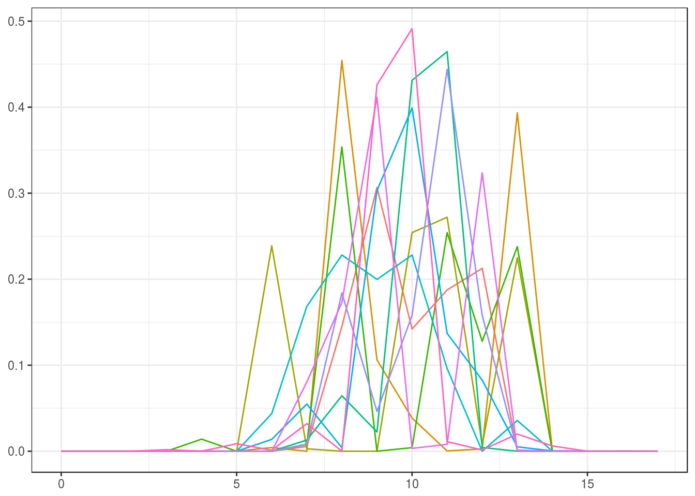
Informative (prior sample size \(=d\)): 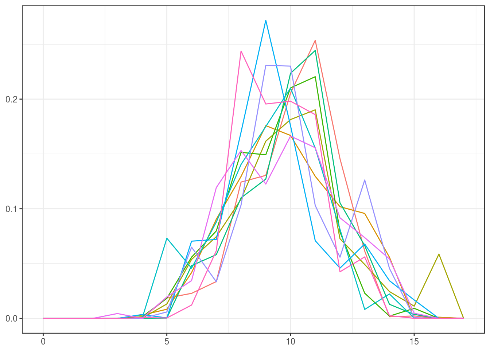
We choose these constants again through the initial guess for the intrinsic volumes \(v^{(0)}\), which yields an initial guess for the transformed variable, \(s^{(0)}=-T\log(v^{(0)})\), which in turn can be used to find the shape and inverse scale of the gamma distribution:
for \(k=0,\ldots,d\).
Example computations:
We use the same initial estimate for \(v^{(0)}\) as above, transform this to an initial estimate \(s^{(0)}=T\log(v^{(0)})\), set the prior for \(S\) and sample ten elements from this distribution, and transform those back to prior samples for \(V\).
Noninformative: 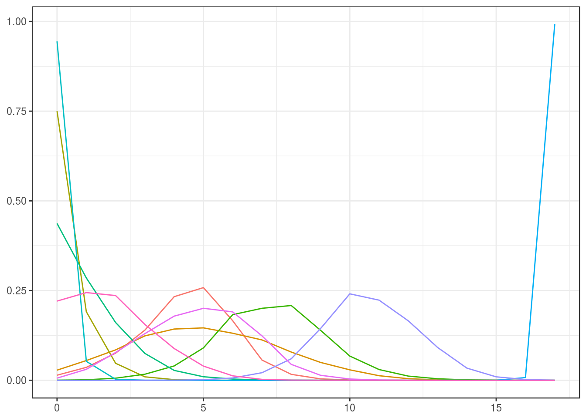
Informative: 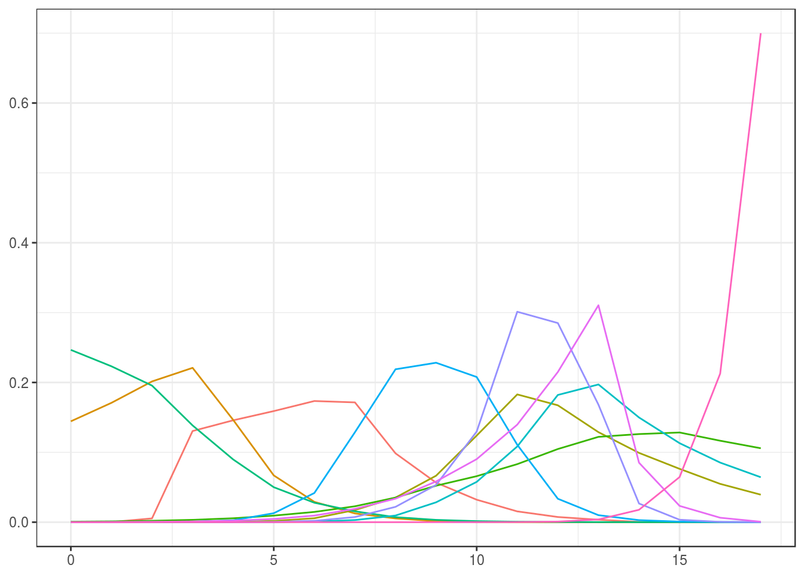
If the underlying cone is polyhedral, then we can obtain direct samples from the intrinsic volumes distribution (via polyh_rivols_gen and polyh_rivols_ineq). This case is the best case scenario, where estimates for the intrinsic volumes are immediate and errors can be bound easily. We describe this case to prepare for the more difficult case of reconstructing the intrinsic volumes from bivariate chi-bar-squared data, and for illustrating the use of the functions in conivol.
Let \(z_1,\ldots,z_n\in\{0,1,\ldots,d\}\) be independent samples of the latent variable \(Z\). Identifying the data with the counting weight, \(w=(w_0,\ldots,w_d)\), \(w_k=|\{i\mid z_i=k\}|\), we see that \(w\) is a sample of the random variable \[ W\sim\text{Multinom}(n;v_0,\ldots,v_d) . \] The corresponding graphical model thus has a very simple form:
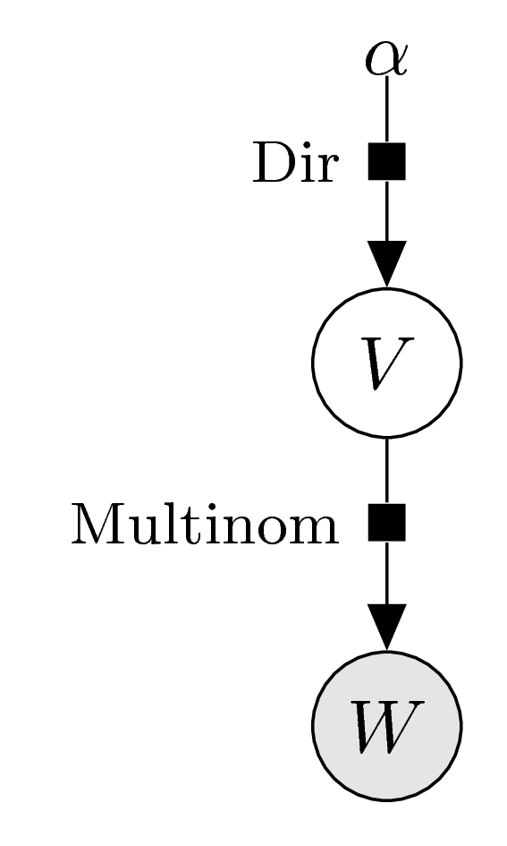
The Dirichlet distribution is a conjugate prior for the multinomial distribution, and the posterior distribution is obtained by adding the weight vector to the parameter vector: \[ \text{pre($V$): } \text{Dirichlet}(\alpha) \quad\Rightarrow\quad \text{post($V$): } \text{Dirichlet}(\alpha+w) . \] In the following we describe the posterior distribution for the case of enforced parity equation and for the case of enforced log-concavity (including some sample computations). In the latter case the posterior distribution can not be derived analytically; instead we will use the MCMC samplers Stan and JAGS to sample from the posterior distribution.
As described above, the only thing we need to do to enforce the parity equation is to decompose the vector into even and odd parts. The corresponding graphical model thus still has a very simple form:
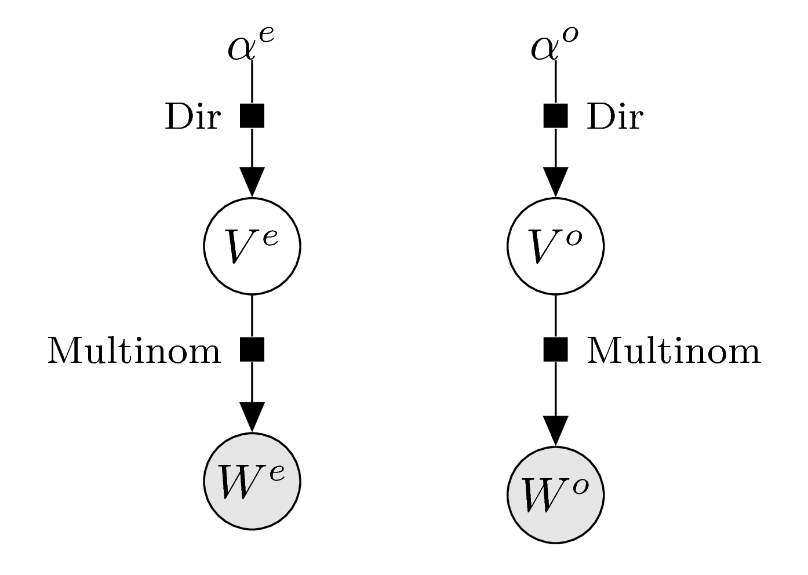
we obtain the posterior distributions for \(V^e\) and \(V^o\) as \[ \text{post($V^e$): } \text{Dirichlet}(\alpha^e+w^e) \;,\quad
\text{post($V^o$): } \text{Dirichlet}(\alpha^o+w^o) . \] The function polyh_bayes computes the weights and generates functions for sampling and for computing marginal quantiles of the posterior distribution.
Example computations:
We sample again ten elements each from the posterior distributions using the small and large samples, and using a noninformative and an informative prior, as described above.
Small sample, noninformative prior:
post_iv <- polyh_bayes(samp_iv_sm,dimC,linC,v_prior=v0_iv_sm,prior_sample_size=1)
str(post_iv)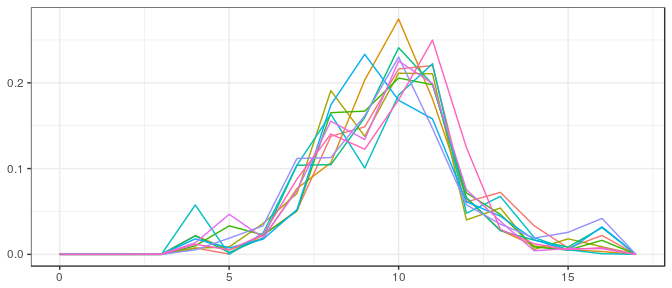
Small sample, informative prior: 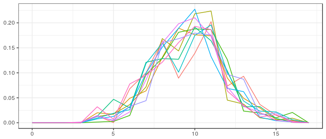
Large sample, noninformative prior: 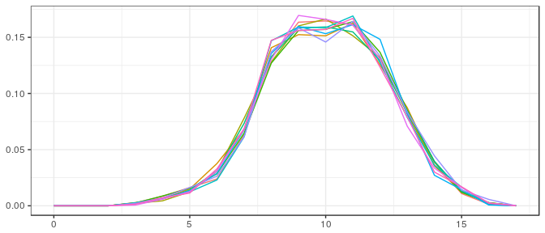
Large sample, informative prior: 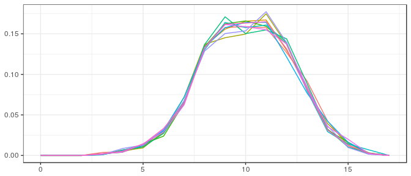
In order to enforce log-concavity we use the prior on the transformed parameters \(S_k=-T\log(V_k)\), as described above. We arrive at the following graphical model:
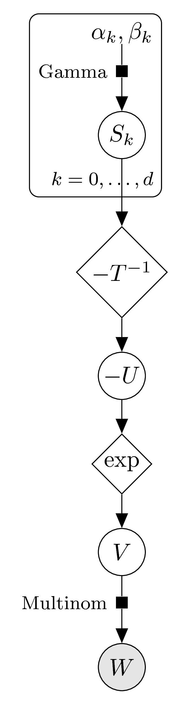
The posterior distribution for \(V\) can not be solved analytically. We can sample from the posterior distribution using a Markov chain Monte Carlo approach. The function polyh_stan creates the input for the sampler Stan, which can be used in R via the rstan package.
Example computations:
We use the function polyh_stan to create the input for Stan, which we pass through an input file using the rstan package. We sample one thousand elements from the posterior distribution (after a burn-in phase) and then display every one-hundredth element so that in the end we see again ten elements from the posterior distribution. We do this for the small and large sample and using a noninformative and an informative prior distribution.
Small sample, noninformative prior:
Define Stan model:
filename <- "ex_stan_model_iv.stan"
staninp <- polyh_stan(samp_iv_sm, dimC, linC,
v_prior=v0_iv_sm, prior="noninformative", filename=filename)Run Stan model:
stanfit <- stan( file = filename, data = staninp$data, chains = 1,
warmup = 1000, iter = 2000, cores = 2, refresh = 1000 )
post_iv_logc <- rstan::extract(stanfit)$V[100*(1:10),]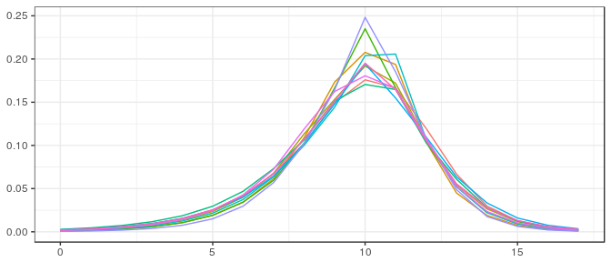
Small sample, informative prior: 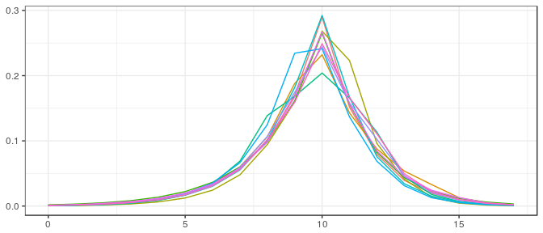
Large sample, noninformative prior: 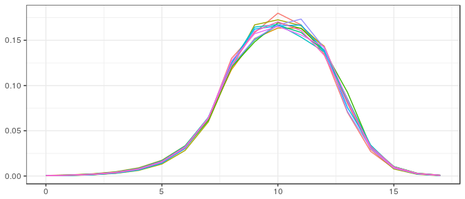
Large sample, informative prior: 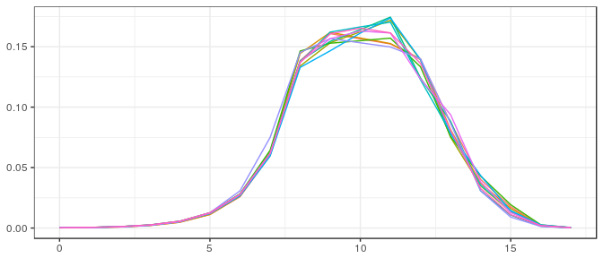
If the given data are samples from the bivariate chi-bar-squared distribution, we work with the variable \(Z\) as a latent variable. Recall that this variable is not entirely latent, as we have the equivalences \[ Z=d\iff g\in \text{int}(C) \stackrel{\text{a.s.}}{\iff} Y=0 ,\qquad
Z=0\iff g\in \text{int}(C^\circ) \stackrel{\text{a.s.}}{\iff} X=0 . \] We will thus only regard the data points \((X_i,Y_i)\) such that both components are nonzero. These on the other hand follow independent chi-squared distributions with degrees of freedom given by the value of the latent variable. The graphical model looks as follows:
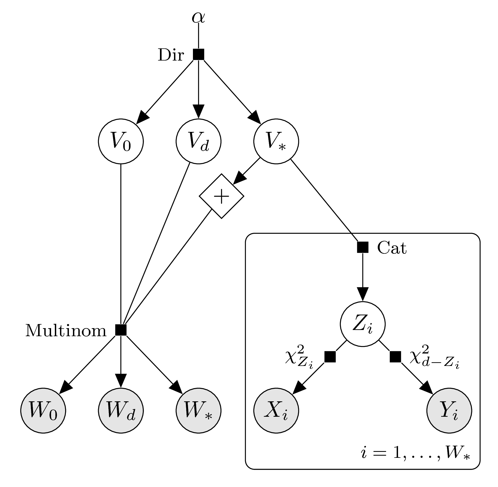
In order to enforce log-concavity we split up the intrinsic volumes variables according to even and odd indices, analogously to the case of sample data from the intrinsic volumes distribution. According to the parity of \(d\) we arrive at the following graphical models.
\(d\) even:
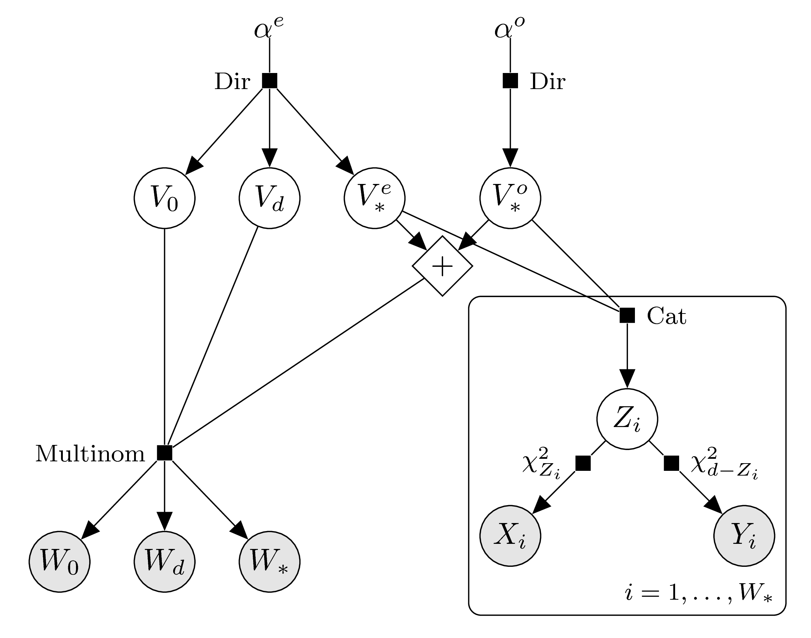
\(d\) odd:
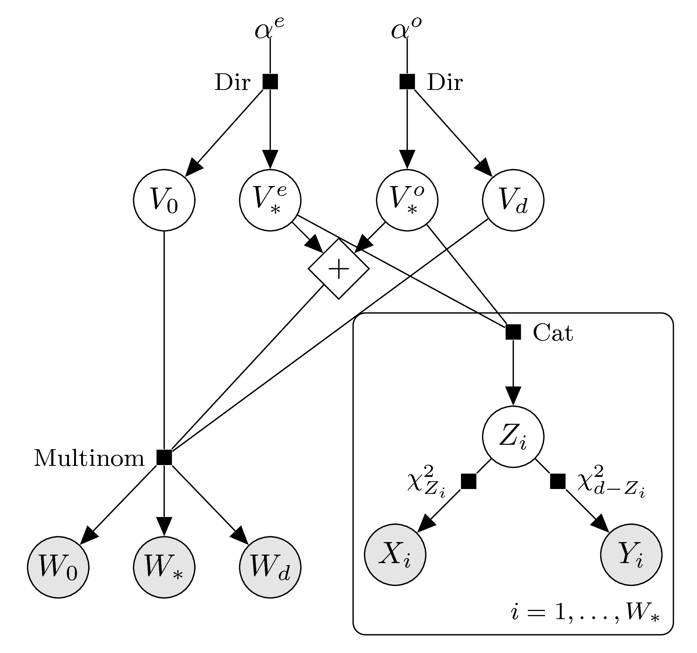
Again, the posterior distribution for \(V\) can not be solved analytically, but we can sample the posterior distribution through an MCMC approach. The functions estim_jags and estim_stan create inputs for the samplers JAGS and Stan, respectively; these programs can be used in R via the packages rjags and rstan.
Example computations:
We redo the computations from the case of intrinsic volumes data, now using the bivariate chi-bar-squared data; and we do these computations twice, first using JAGS, then using Stan.
JAGS | Small sample, noninformative prior:
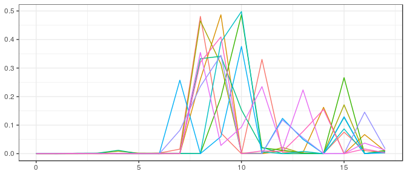
JAGS | Small sample, informative prior:
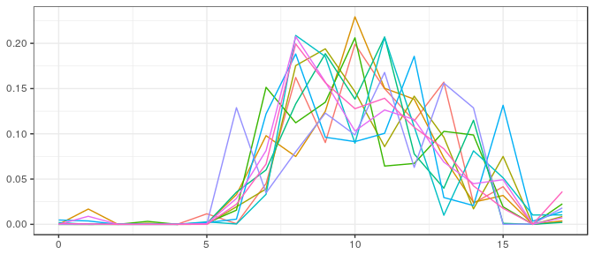
JAGS | Large sample, noninformative prior:
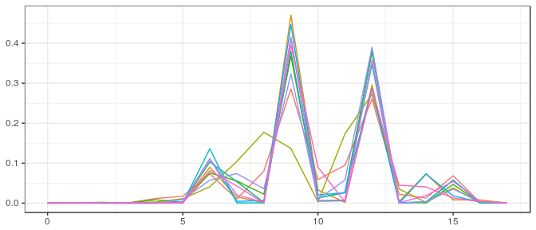
JAGS | Large sample, informative prior:
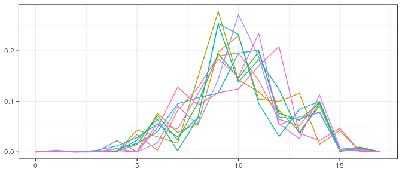
Stan | Small sample, noninformative prior:
filename <- "ex_stan_model_bcb.stan"
staninp <- estim_stan(samp_bcb_sm, d, dimC, linC,
v_prior=v0_bcb_sm, filename=filename)stanfit <- stan( file = filename, data = staninp$data, chains = 1,
warmup = 1000, iter = 2000, cores = 2, refresh = 1000 )
post_bcb_pa <- rstan::extract(stanfit)$V[100*(1:10),]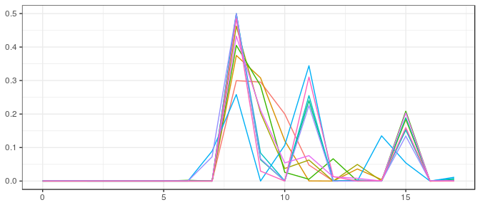
Stan | Small sample, informative prior:
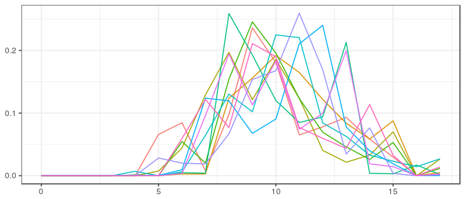
Stan | Large sample, noninformative prior:
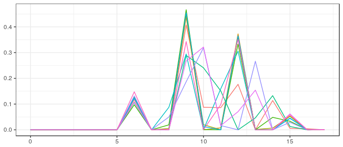
Stan | Large sample, informative prior:
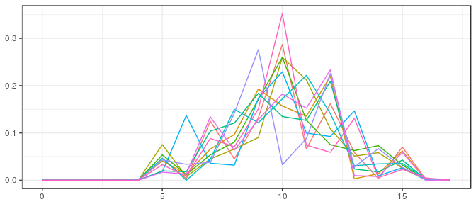
Finally, we enforce log-concavity again using the transformed parameters \(S_k=-T\log(V_k)\). The graphical models, according to the parity of \(d\), thus look as follows.
\(d\) even:
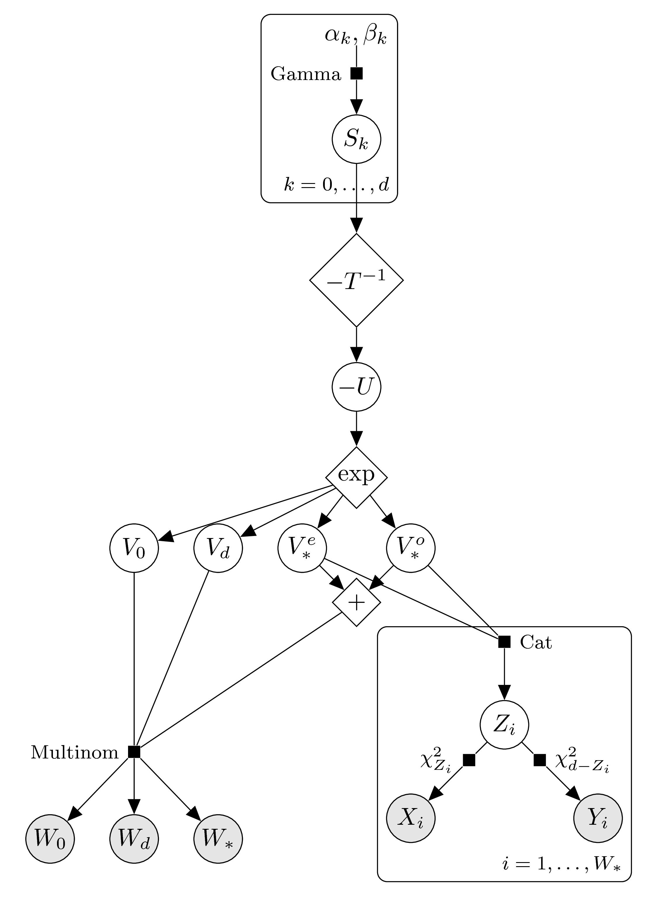
\(d\) odd:
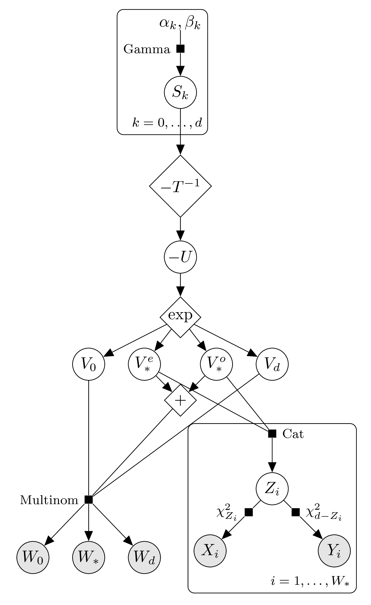
The function estim_stan supports this enforced log-concavity (set the parameter enforce_logconc=TRUE).
Example computations:
We redo the computations one more time, this time using the Stan model that enforces log-concavity.
Small sample, noninformative prior:
filename <- "ex_stan_model_bcb_logc.stan"
staninp <- estim_stan(samp_bcb_sm, d, dimC, linC, enforce_logconc=TRUE,
v_prior=v0_bcb_sm, filename=filename)stanfit <- stan( file = filename, data = staninp$data, chains = 1,
warmup = 1000, iter = 2000, cores = 2, refresh = 1000 )
post_bcb_logc <- rstan::extract(stanfit)$V[100*(1:10),]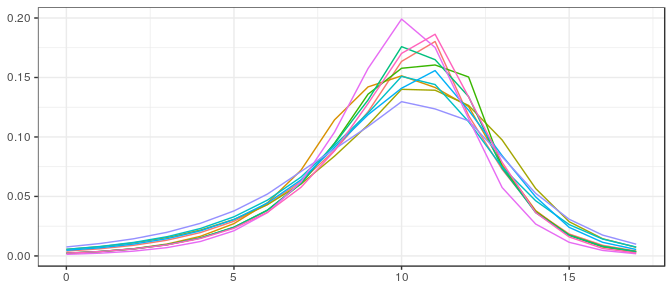
Small sample, informative prior:
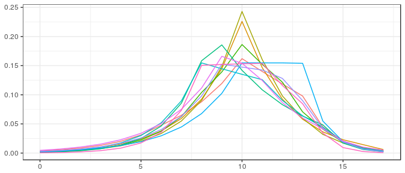
Large sample, noninformative prior:
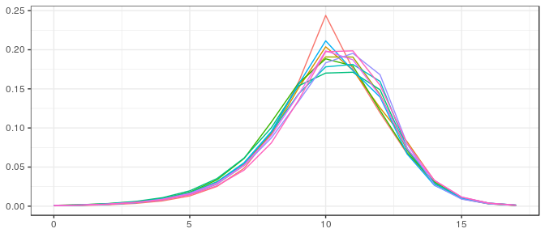
Large sample, informative prior:
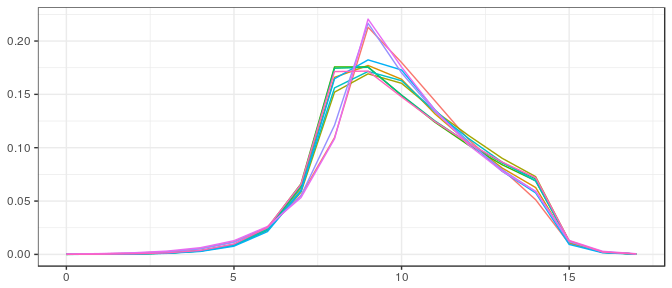